Common Problems
Price Tracking Service
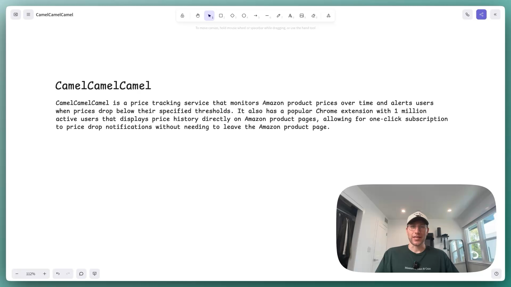
Everyone. Let's talk about how we would design the price tracking site
0:00
/
1:02:28
Understanding the Problem
📈 What is CamelCamelCamel?
CamelCamelCamel is a price tracking service that monitors Amazon product prices over time and alerts users when prices drop below their specified thresholds. It also has a popular Chrome extension with 1 million active users that displays price history directly on Amazon product pages, allowing for one-click subscription to price drop notifications without needing to leave the Amazon product page.
Functional Requirements
Core Requirements
- Users should be able to view price history for Amazon products (via website or Chrome extension)
- Users should be able to subscribe to price drop notifications with thresholds (via website or Chrome extension)
CamelCamelCamel has a popular Chrome extension with 1 million active users that displays price history directly on Amazon product pages, allowing for one-click subscription to price drop notifications without needing to leave the Amazon product page.
Below the line (out of scope):
- Search and discover products on the platform
- Price comparison across multiple retailers
- Product reviews and ratings integration

Non-Functional Requirements
The scale and performance requirements for CamelCamelCamel are driven by Amazon's massive product catalog and the need for timely price notifications.
Core Requirements
- The system should prioritize availability over consistency (eventual consistency acceptable)
- The system should handle 500 million Amazon products at scale
- The system should provide price history queries with < 500ms latency
- The system should deliver price drop notifications within 1 hour of price change
Below the line (out of scope):
- Strong consistency for price data
- Real-time price updates (sub-minute)
We're building a system that must be "polite" to Amazon while providing valuable price tracking to millions of users. This creates interesting technical challenges around data collection, storage efficiency, and notification delivery that we'll address in our deep dives.
Here is how your requirements might look on the whiteboard:
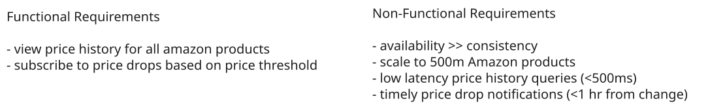
CamelCamelCamel Requirements
The Set Up
Planning the Approach
We'll follow the Hello Interview framework by building our design sequentially through each functional requirement, then use our non-functional requirements to guide our deep dive discussions on scaling challenges.
Defining the Core Entities
I like to begin with a broad overview of the primary entities we'll need, without getting bogged down in all the details yet. We can always add more complexity as we iterate on the design.
Just make sure that you let your interviewer know your plan so you're on the same page. I'll often explain that I'm going to start with just a simple list, but as we get to the high-level design, I'll document the data model more thoroughly.
To satisfy our key functional requirements, we'll need the following entities:
- Product: Represents an Amazon product we're tracking, including its current price and metadata needed for price history display and notifications
- User: Represents a person using our service, containing their contact information and preferences for receiving price drop notifications
- Subscription: Links users to products they want to monitor, specifying the price threshold that triggers notifications
- Price: Time-series data capturing price changes over time for each product, enabling us to generate historical price charts
In the actual interview, this can be as simple as a short list like this. Just make sure you talk through the entities with your interviewer to ensure you are on the same page.
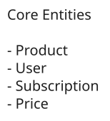
CamelCamelCamel Entities
The API
The API is the main way users will interact with our price tracking service, both through our website and the Chrome extension. Let's design endpoints that directly support our two core functional requirements.
// Retrieve historical price data for charts and displays
GET /products/{product_id}/price?period=30d&granularity=daily -> PriceHistory[]We include product_id in the URL path rather than the request body for better caching and REST compliance. The granularity parameter allows us to return daily averages for long periods or hourly data for recent timeframes.
// Subscribe to price drop notifications with threshold
POST /subscriptions
{
product_id,
price_threshold,
notification_type,
}
-> 200Data Flow
Before diving into the technical design, let's understand how data flows through our system. The data flow shows how information moves from initial collection to final user output.
Understanding this flow early in our design process serves multiple purposes. First, it helps ensure we're aligned with our interviewer on the core functionality before getting into implementation details. Second, it provides a clear roadmap that will guide our high-level design decisions. Finally, it allows us to identify potential bottlenecks or issues before we commit to specific architectural choices.
In this case, the "hidden" requirement is that we need to be able to get the data in the first place!
- Web crawlers and Chrome extension collect current prices from Amazon product pages
- Price data is validated and stored in our price database
- Price changes trigger events for notification processing
- User receives email notification when price drops below threshold
Note that this is simple, we will improve upon as we go, but it's important to start simple and build up from there.
High-Level Design
We'll build our design incrementally, starting with the most fundamental requirement and adding complexity as we address each successive need. This ensures we deliver a working system first, then layer on additional capabilities.
Amazon is not friendly to price tracking services. They don't provide an API, actively discourage scraping, and implement rate limiting (typically 1 request per second per IP address). We must design our system to work within these constraints while remaining respectful of Amazon's terms of service.
1) Users should be able to view price history for Amazon products (via website or Chrome extension)
Users want to see how prices have changed over time for specific Amazon products. This serves as the foundation of our entire system and breaks down into two distinct challenges: acquiring price data from Amazon and serving historical price queries efficiently.
For the first iteration, we'll establish the basic data collection and storage infrastructure. Our architecture needs a web scraping system to gather price data, a storage layer for historical prices, and an API service to serve price history to users.
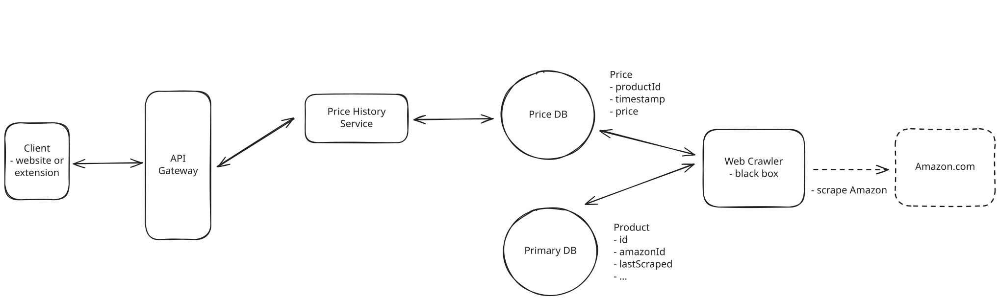
CamelCamelCamel High Level Design - Price History
Here's what we're building:
- Client: Our client is either the website or the Chrome extension. In either case, they're how the user views price history graphs.
- API Gateway: Handles authentication, rate limiting, and routes requests to appropriate services
- Price History Service: Manages price data retrieval and coordinates with the database
- Web Crawler Service: Scrapes Amazon product pages to collect current prices
- Price Database: Stores both current product information and historical price data
- Primary Database: Stores all other tables aside from price like Users, Products, and Subscriptions.
We choose to separate the Price History Service from the crawler because they have different scaling characteristics. The history service needs to handle many concurrent read requests from users viewing charts, while the crawler operates on a scheduled basis with consistent write patterns. This separation also allows us to optimize each service independently.
As for the databases, we'll make a strategic separation based on scale and access patterns. Our Primary Database will store Users, Products, and Subscriptions together since these have similar operational characteristics - they're relatively small and have traditional CRUD access patterns. However, we'll put our Price Database completely separate because price history data has fundamentally different requirements: it will grow to billions of rows, is append-only, requires time-series optimizations, and can tolerate eventual consistency. This separation allows us to optimize each database independently and scale them based on their specific needs.
We'll choose to "black box" the web crawler service for now. We can assume it periodically scrapes Amazon product pages and updates the Price table. Of course, we'll go into more detail about just how this might be accomplished in our deep dives.
When a user requests price history through our website or Chrome extension:
- Client sends GET request to /products/{product_id}/price?period=30d
- API Gateway authenticates the request and routes to Price History Service
- Price History Service queries the Price table filtered by product_id and time range
- Historical prices are returned as JSON, ready for chart rendering
- Chrome extension or website displays the price chart to the user
2) Users should be able to subscribe to price drop notifications with thresholds (via website or Chrome extension)
Building on our price history foundation, users now want to receive notifications when product prices drop below their specified thresholds. This introduces new requirements for user management, subscription storage, and notification delivery.
We'll add new components while leveraging our existing infrastructure. For our initial implementation, we can start with a dead simple polling approach that gets the job done, knowing we can optimize this later in our deep dives.
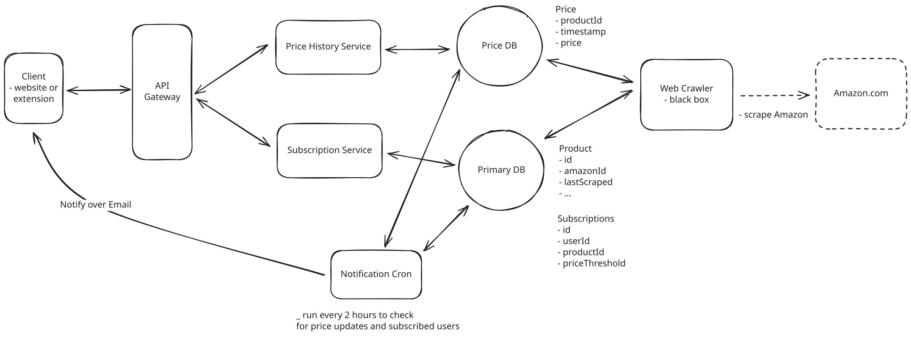
CamelCamelCamel High Level Design - Subscriptions
Our enhanced architecture includes:
- Subscription Service: Manages user subscriptions and price threshold settings
- Notification Cron Job: Periodically checks for price changes and sends email notifications
We separate the Subscription Service from the Price History Service because they serve different user actions and have different data access patterns. The Subscription Service handles user account operations (create, update, delete subscriptions), while the Price History Service focuses on read-heavy price queries.
For our initial notification system, we have a straightforward batch processing approach:
- Cron job runs every 2 hours to check for notifications
- Job queries Price table for any price changes in the last 2 hours
- For each price change, query Subscriptions table from the Primary Database to find users with thresholds >= new_price
- Send email notifications for any triggered subscriptions
- Mark notifications as sent to avoid duplicates
This polling approach works but has obvious limitations. Users might wait up to 2 hours for price drop notifications, and we're doing expensive database scans every few hours. We'll explore much better real-time approaches in our deep dives that provide sub-minute notification delivery.
When a user subscribes to price alerts:
- User submits subscription via website or Chrome extension
- API Gateway routes POST request to Subscription Service
- Subscription Service creates record in Subscriptions table (user_id, product_id, price_threshold)
- Service returns confirmation to user
This simple approach makes sure we have a working subscription system that satisfies our functional requirements. Users get price drop alerts (just not immediately), and our system remains easy to understand and debug. The periodic nature also prevents notification processing from interfering with our core price tracking functionality.
Potential Deep Dives
Time for the fun part. We'll take our existing, simple design and layer on complexity via our deep dives. When we're done, we'll have a system that satisfies all of our functional and non-functional requirements.
As one of my favorite sports journalists Fabrizio Romano would say, "Here we go!"
1) How do we efficiently discover and track 500 million Amazon products?
Up until now, we've been "black boxing" our web crawler, simply assuming it somehow gets price data from Amazon and updates our database. But when we confront the reality of tracking 500 million products while respecting Amazon's rate limiting constraints, we realize this is actually one of our biggest technical challenges.
We're solving two distinct but related problems here.
The first challenge is product discovery: we need to find all 500 million existing products when we launch, plus discover the approximately 3,000 new products Amazon adds daily.
The second challenge is price monitoring: we need to efficiently update prices for millions of known products while prioritizing which ones to check most frequently.
Both challenges face the same fundamental constraint of Amazon's rate limiting, but understanding them separately helps us design more effective solutions.
Approach
The most straightforward approach involves deploying traditional web crawlers that systematically browse Amazon's website. We start from seed URLs like Amazon's homepage and category pages, extract product links from each page, and recursively follow these links to discover the entire product catalog. Each crawler runs through categories methodically, extracting product IDs, prices, and basic metadata before moving to the next page.
From an implementation perspective, this is largely what we designed in Design a Web Crawler.
This treats Amazon like any other website to be indexed. We implement a frontier queue containing URLs to visit, a visited URL tracker to avoid cycles, and crawlers that process URLs sequentially. When a crawler encounters product recommendation links or "customers also viewed" sections, it adds these new URLs to the frontier queue for future processing. The system maintains a simple database of discovered products and updates prices whenever a product page is revisited.
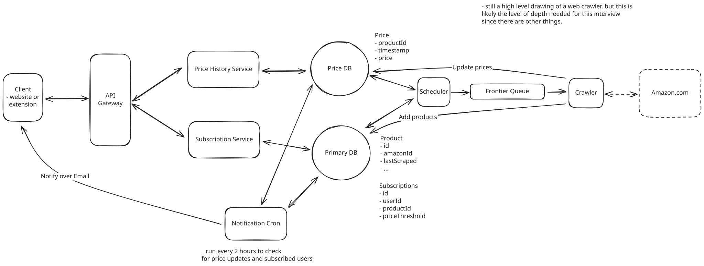
Naive Web Crawler
Challenges
The fundamental problem is scale arithmetic. With 500 million products to track and Amazon's rate limit of approximately 1 request per second per IP address, a single crawler would require over 15 years just to visit each product page once. Even if we deploy 1,000 servers with different IP addresses, we're still looking at 5+ days for a complete catalog refresh, during which millions of price changes will go undetected.
This also creates a discovery lag problem. New products added to Amazon might not be found for weeks or months, depending on where they appear in our crawling sequence. Popular products that change prices multiple times per day will have stale data for extended periods, making our service unreliable for time-sensitive deals. The massive infrastructure cost of running thousands of crawling servers makes this economically unfeasible for most companies.
Approach
The key realization here is that we have fundamentally limited crawling resources, so we better use them wisely. Product popularity follows a Pareto distribution - a small percentage of Amazon's products get the vast majority of user attention, while there's a long tail of products that people rarely care about. Instead of treating all 500 million products equally, we can tier our crawling based on actual user interest and dramatically improve our service quality where it matters most.
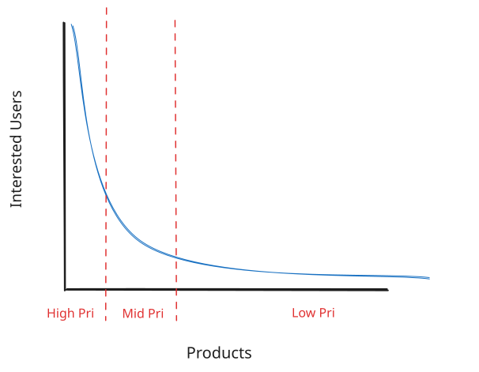
Pareto
We can implement a priority scoring system where products get higher scores based on active user engagement. Products with many price drop subscriptions receive the highest priority since users are actively waiting for updates on these items. Products that users search for frequently on our website also get elevated priority, indicating current interest even if subscriptions haven't been created yet.
The crawling system maintains priority queues where high-interest products might be checked every few hours, medium-interest products get daily updates, and low-interest products are refreshed weekly or even less frequently. We also implement feedback loops where successful price drop notifications (ones that lead to user clicks or purchases) boost a product's priority score, creating a self-reinforcing system that focuses on the most valuable updates.
This allows us to achieve excellent coverage for the products that matter most to our users while using a fraction of the infrastructure required for comprehensive crawling. Popular products stay current while niche products still receive periodic updates.
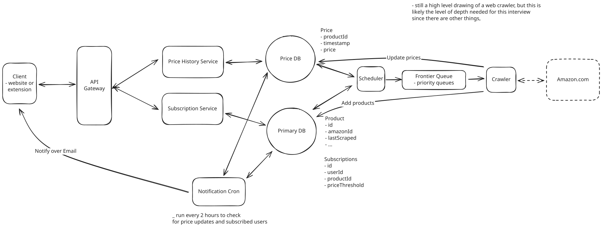
Priority Queue
Challenges
The fundamental limitation is coverage gaps for new or trending products that haven't yet built up user interest signals. A hot new product release might not get discovered quickly if no users are searching for it yet, potentially missing early adoption opportunities when prices are most volatile.
Approach
Remember that Chrome extension with 1 million users we mentioned earlier? It turns out to be more than just a convenience feature, it's actually our secret weapon for data collection.
The most elegant solution leverages our Chrome extension's 1 million users as a distributed data collection network. When users browse Amazon with our extension installed, it automatically captures product IDs, current prices, and page metadata, then reports this information to our backend services. This crowdsourced approach transforms user browsing behavior into our primary data collection mechanism.
The extension operates transparently, extracting structured data from Amazon's product pages using DOM parsing and sending updates to our price reporting API. We receive real-time price data for products that users are actively viewing, which naturally prioritizes popular and trending items. This user-generated data covers the products people actually care about without requiring extensive crawler infrastructure.
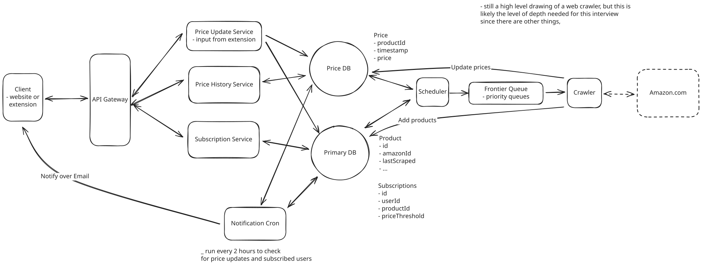
Extension Crowdsource
Our traditional crawlers now just need to handle products that haven't been viewed by extension users recently. The system also uses extension data to discover new products; when users visit previously unknown product pages, we add them to our Product table. Brilliant!
Challenges
This introduces dependency on user adoption and browsing patterns. Products in niche categories with low user interest might receive infrequent updates, creating coverage gaps. But most importantly, we must carefully handle the data validation challenge since user-generated price reports could be manipulated or incorrect, requiring verification systems we'll explore in our next deep dive. We'll talk about this next.
This hybrid approach solves our scale challenge by turning our biggest constraint (the need to monitor millions of products) into our competitive advantage through crowdsourced data collection. Instead of fighting Amazon's rate limits with massive crawler infrastructure, we leverage user behavior to naturally prioritize and collect data for the products that matter most.
If you're thinking to yourself, "How the hell would I know this? I know nothing about Chrome Extensions!" don't sweat it. When I ask this in an interview, I usually lead with, "Your extension is installed on millions of browsers actively viewing product pages. Can you make use of that somehow?"
2) How do we handle potentially malicious price updates from Chrome extension users?
The Chrome extension approach from our previous deep dive creates a powerful data collection advantage, but it introduces a critical reliability challenge. With 1 million users potentially submitting price data, we must assume that some percentage will be malicious actors, mistaken users, or systems experiencing technical issues.
Consider this scenario: A malicious user reports that the latest iPhone costs $0.01, triggering price drop notifications to thousands of subscribers. Users rush to Amazon only to find the normal price, damaging our credibility and user trust. Our notification system's effectiveness depends entirely on data accuracy, making this challenge essential to solve properly.
So what should we do?
Approach
One thing we could do is validate by committee. While we may have a few bad actors, they're not likely to be pervasive. Instead of immediately accepting any price report, we wait until we have N independent users report the same price change before marking it as validated and triggering notifications.
The system works by holding price updates in a "pending validation" state when they first arrive from extension users. We maintain a consensus table that tracks how many unique users have reported each specific price for each product within a time window (say, 1 hour). Only when we reach our consensus threshold - perhaps 3 independent users for popular products, or 2 for less popular ones - do we accept the price change as legitimate and process notifications.
For products with high subscription counts or significant price drops, we can require higher consensus numbers. A $500 price drop on the latest iPhone might need 5 independent confirmations, while a $2 change on a book might only need 2. The system tracks user reputation over time, so reports from consistently accurate users might count more heavily toward the consensus requirement.
This creates a natural defense against both malicious actors and technical errors. A single bad actor can't trigger false notifications because they need multiple accomplices. Technical issues like browser cache problems or network glitches are unlikely to affect multiple users simultaneously in the same way, so these get filtered out automatically.
Challenges
The fundamental limitation is delay for legitimate price changes, especially for niche products. If only a few users monitor a specialized product category, it might take hours or even days to reach consensus threshold, meaning subscribers miss time-sensitive deals. Flash sales or limited-time offers could expire before enough users browse the product to validate the price drop.
Popular products create their own problems during major sales events. When Amazon drops prices on thousands of items simultaneously, our system might be overwhelmed with pending validations, creating backlogs that delay notifications even for products that quickly reach consensus.
Lastly, it's still possible for bad actors to coordinate and "beat" your consensus system. While maybe unlikely, it's still a possibility.
Approach
The best approach is simple: trust the extension data immediately, but verify it quickly with our crawlers when something looks suspicious.
Here's how it could work. When our extension reports a price change, we accept it right away and can send notifications immediately. But if the change seems fishy - like a huge price drop, or it's from a user who's been wrong before, or it's a popular product with lots of subscribers - we automatically queue up a verification crawl job to check Amazon directly within a few minutes.
We use our existing crawler infrastructure but give these verification jobs high priority. Instead of waiting hours or days for our regular crawling schedule, suspicious price updates get checked within 1-5 minutes. If our crawler finds out the extension data was wrong, we can send correction notifications and mark that user as less trustworthy.
For really important products, we can wait for multiple users to report the same price change before we fully trust it. If we see conflicting reports from different users, we immediately send a crawler to figure out who's right.
The nice thing is that most extension data gets processed immediately (fast notifications), but we catch the bad stuff quickly enough that it doesn't cause real damage. Users get fast alerts for legitimate deals, and we maintain trust by correcting the occasional mistake.
Challenges
This does add significant complexity to our crawling infrastructure, requiring priority queue management and rapid response capabilities that consume additional server resources. The verification crawling creates more load on Amazon's servers, potentially increasing our risk of rate limiting or IP blocking.
This trust-but-verify approach strikes a really nice balance, providing immediate user value while maintaining the data integrity essential for long-term trust.
3) How do we efficiently process price changes and notify subscribed users?
Right now, we're using a straightforward cron job that runs every 2 hours to scan for price changes and send notifications. While this might work for basic functionality, it fails to meet our non-functional requirement of delivering notifications within 1 hour of price changes. More critically, the polling approach creates massive database load as we scale to millions of price updates and subscriptions.
The notification system's effectiveness directly impacts user satisfaction and retention. Users expect timely alerts for price drops, especially for competitive deals that might sell out quickly. A 2-hour delay often means missing time-sensitive opportunities, making our service less valuable than competitors with faster notification systems.
The fundamental problem with our current polling approach is that we're asking the wrong question at the wrong time. Instead of asking "what changed in the last 2 hours?" every 2 hours, we should be asking "who cares about this change?" immediately when a change happens.
Moving to event-driven notifications is straightforward. When a price changes, we immediately know which users need alerts without expensive database scans. We have two solid ways to implement this, each with different trade-offs.
The first option is database change data capture (CDC), where we configure our database to automatically publish events whenever price data changes. When our crawlers or extension data processors insert new price records, database triggers fire and send events to Kafka (or similar) containing the product ID, old price, and new price. Our notification service subscribes to these events and immediately queries the subscriptions table to find affected users.
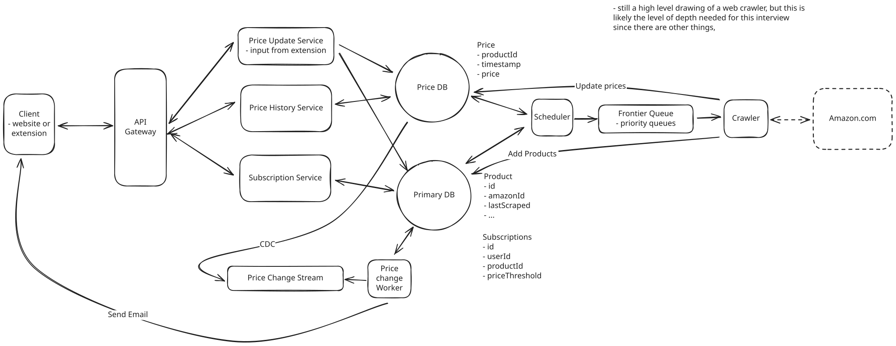
Database Change Data Capture
This is clean because price changes automatically trigger notifications without any application-level coordination. We don't need to remember to publish events in our application code since the database handles it for us. The data flow becomes completely automatic.
The second option is dual writes, where our price collection services write to both the database and publish events to Kafka simultaneously. When crawler data or extension updates come in, the same service that writes to the price database also publishes structured events to our notification stream.
The dual-write approach lets us be smarter about which changes trigger notifications. We can filter out tiny price fluctuations that wouldn't interest users or batch multiple rapid changes before publishing events. We also avoid the overhead of database triggers on every single price update.
Regardless of which option we choose, our notification consumers work the same way. They read price change events from Kafka and immediately query the subscriptions table to find users whose thresholds have been triggered. For each matching subscription, we send an email notification through our existing notification service.
The beauty is that we only process actual price changes rather than expensive table scans of millions of records. Most products don't change price very frequently, so we're talking about a manageable number of events even at scale. When a popular product's price drops, we run one query to find all subscribers with thresholds above the new price and send those notifications right away.
4) How do we serve fast price history queries for chart generation?
Looking at our current data storage approach, we're keeping price history in a straightforward PostgreSQL table with basic indexing on (product_id, timestamp). This works for initial functionality, but fails to meet our < 500ms latency requirement when serving price charts for popular products with extensive history data.
Consider the scale challenge that comes from aggregating price data for popular products. Popular products might have price data points every few hours for several years, resulting in many thousands of records per product. When users request a 2-year price chart, we must aggregate this data into appropriate time buckets (daily or weekly averages) and return it quickly enough for smooth user experience. Raw database queries struggle with this aggregation workload.
Approach
The straightforward solution is pre-computing price aggregations at different time granularities using scheduled batch jobs. Every night, we run a job that calculates daily, weekly, and monthly price summaries for all products, storing these aggregations in a simple table optimized for fast chart queries.
Our batch job processes the previous day's price data and computes relevant statistics: average price, minimum price, maximum price, opening price, and closing price for each time period. We store all this in a single price_aggregations table with a granularity column that indicates whether each row represents daily, weekly, or monthly data.
When users request price charts, our API queries this aggregation table instead of the raw price data. A 30-day chart queries for daily aggregations, while a 2-year chart uses monthly aggregations. With proper indexing on (product_id, granularity, date), these queries return dozens of pre-computed records in milliseconds instead of aggregating thousands of raw price points.
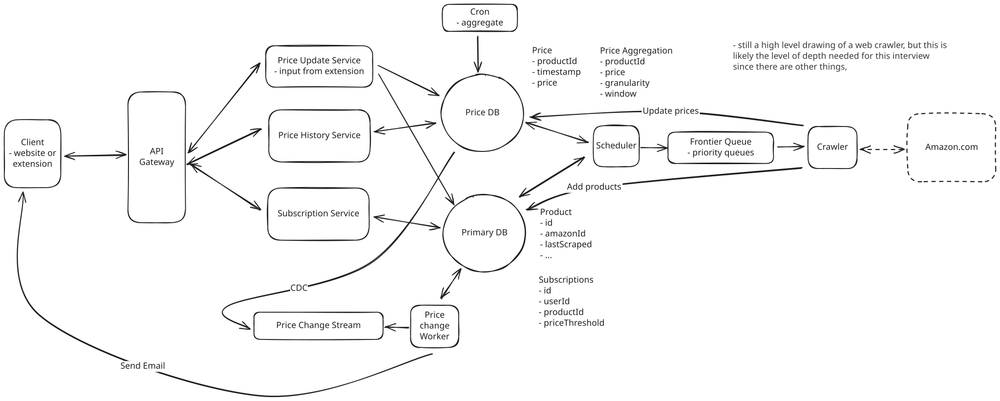
Scheduled Pre-Aggregation
Challenges
Pre-aggregation creates data freshness problems since charts show data that's up to 24 hours old. For a price tracking service, this staleness is generally acceptable since users are looking at historical trends rather than real-time prices. The batch processing approach also requires additional storage space for all the pre-computed summaries, though this scales linearly with the number of products and time periods we support.
Approach
Rather than running these cron jobs, we can use TimescaleDB, a time-series extension for PostgreSQL that's purpose-built for this type of workload. Since we're already using PostgreSQL for our operational data (users, products, subscriptions), TimescaleDB lets us handle price history analytics within the same database ecosystem while getting specialized time-series performance.
With TimescaleDB, we can perform real-time aggregations directly without any pre-computation. When a user requests a 6-month price chart, we run a query like SELECT time_bucket('1 day', timestamp), avg(price) FROM prices WHERE product_id = ? GROUP BY 1 and get results in milliseconds even with billions of price records. TimescaleDB's automatic partitioning and compression make these aggregations incredibly fast while maintaining PostgreSQL's familiar interface.
This keeps our architecture simple. We don't need complex pre-aggregation jobs or multiple database systems. Users can request any time range or granularity, and TimescaleDB computes the results on demand. The system handles our scale requirements naturally since TimescaleDB is designed for exactly this type of time-series workload, while we maintain all the operational benefits of staying within the PostgreSQL ecosystem.
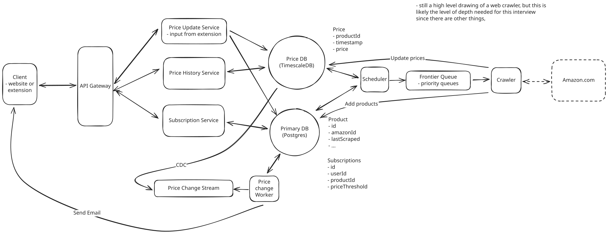
TimescaleDB
Alternatives like ClickHouse could provide even higher analytical performance, but TimescaleDB offers the best balance of performance and operational simplicity by keeping our entire data stack unified.
The TimescaleDB approach provides the performance and flexibility needed for production-scale price chart serving while maintaining the real-time responsiveness users expect. By choosing the right tool for analytical workloads, we achieve both simplicity and performance without complex caching or pre-aggregation strategies.
Final Design
Taking a step back, we've designed a scales system that can intelligently collect price data from Amazon, validate it, and notify users when prices drop all while serving price history charts to users in real-time. Not bad!
As for the final diagram, I'll admit the drawing got a little out of hand with all the crossing arrows. But we end up with a final design that looks something like this!
Final Design
What is Expected at Each Level?
So, what am I looking for at each level when I ask candidates to design a price tracking system like CamelCamelCamel?
Mid-level
At mid-level, I'm looking for candidates who can create a working high-level design that addresses the core functional requirements - price history display and notification subscriptions. They should understand the basic challenge of collecting price data from Amazon and propose a simple web scraping approach, even if it's not scalable. I expect them to design a straightforward database schema with products, users, subscriptions, and price history. While they might initially suggest polling every product frequently, with some guidance they should recognize the scale limitations and understand why prioritization might be necessary.
Senior
For senior candidates, I expect you to quickly identify that data collection is the core technical challenge and drive the conversation toward solutions like the Chrome extension approach. You should understand the trade-offs between different crawling strategies and understand that crawling 500M products will require either immense resources or endless time. I'm looking for solid understanding of notification system architectures, you should be able to explain why polling doesn't scale and propose event-driven alternatives using message queues. Ideally you go deep on at least of couple of deep dives, even if not the ones I have above.
Staff+
For staff candidates, I'm evaluating your ability to see the bigger picture and balance technical elegance with operational reality. You should proactively recognize that the Chrome extension isn't just a user feature, but that it can be used to solve the fundamental data collection scaling problem. I expect you to discuss system evolution thoughtfully: how do we start simple but design for the scale we'll eventually need? You should understand the business implications of technical choices, for example, why data validation affects user trust and retention, not just technical correctness. Strong candidates often surface concerns I haven't asked about, like handling Amazon's anti-scraping measures, managing extension user privacy, or planning for what happens when Amazon changes their page structure. You demonstrate systems thinking by considering how different components affect each other and proposing solutions that prioritize long-term maintainability alongside immediate functionality.
Test Your Knowledge
Answer the question below to find your gaps.
Question 1 of 15
Which database type optimizes time-based data aggregations?
1
Graph database
2
Document database like MongoDB
3
Key-value store
4
Time-series database